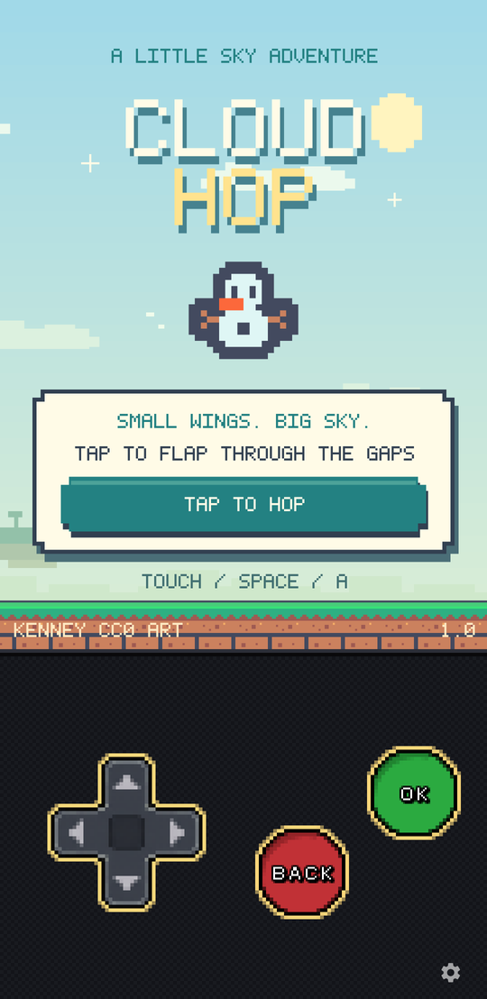
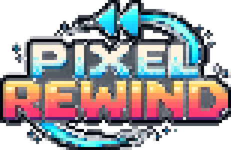
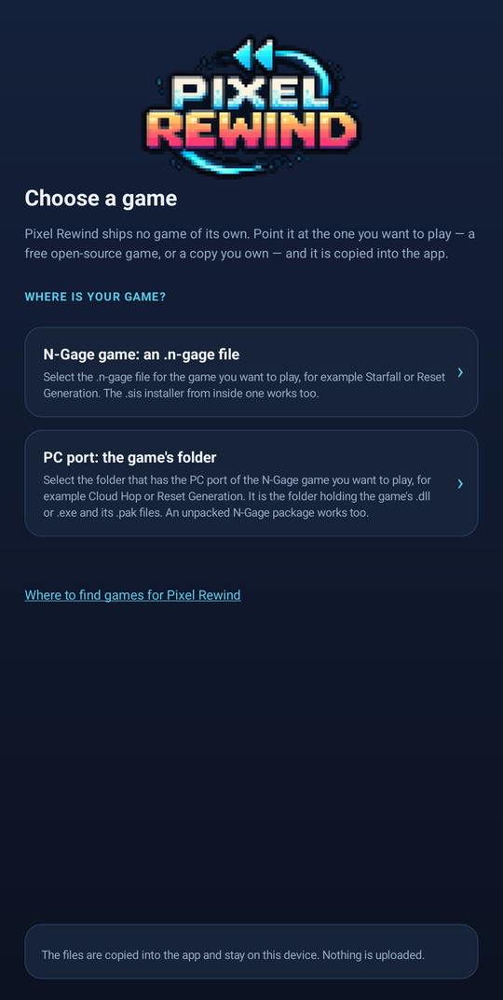
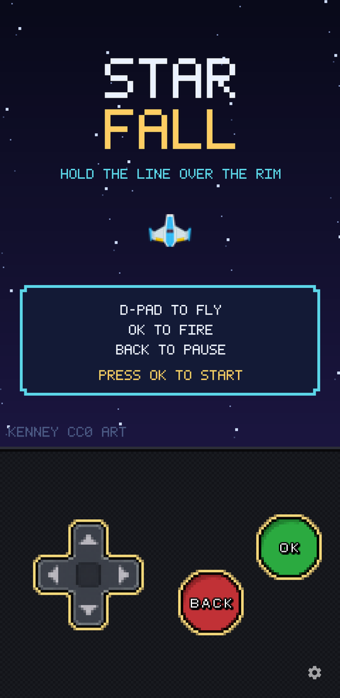
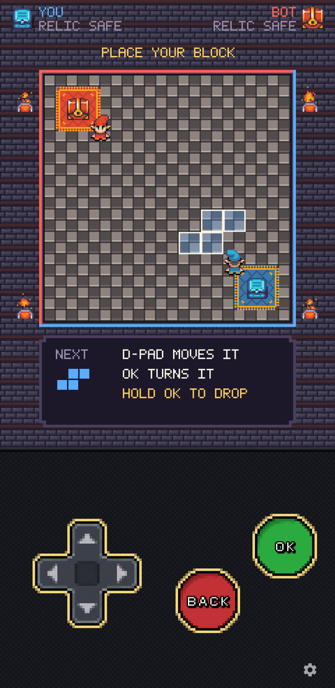
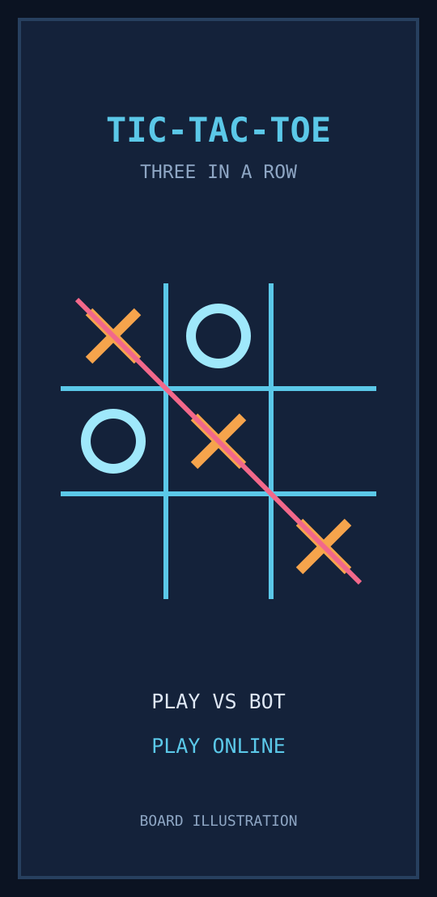
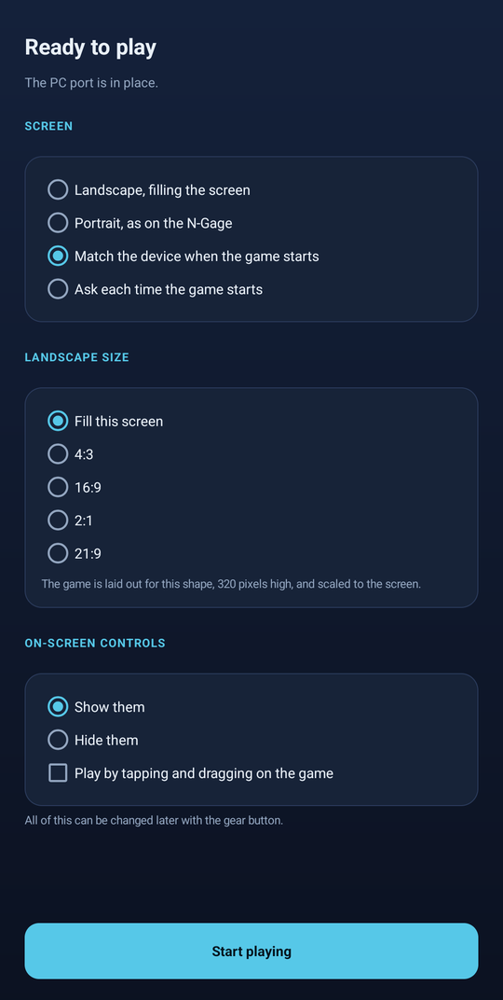

Cloud Hop
A tap-to-fly game in landscape, played with the screen itself.
Art by Kenney (CC0)
Download .n-gage
A player for N-Gage-era games. It ships no game of its own — you bring the one you want to play, and it runs the original engine rather than a remake of it.
Android · Linux
Bring your own game
Pixel Rewind ships no game content at all. On first start it asks where your game is — a free open-source one, or a copy you already own — and copies what it needs into its own storage. After that it starts straight into the game.
It takes an N-Gage .n-gage file, or the folder holding a PC port's executable and its data files. Nothing you import is uploaded anywhere; it stays on the device.
Bring only games you have the right to use — a copy you own, or one that is freely and lawfully distributed. Using Pixel Rewind any other way is a breach of the terms of use. The free sample games below are available to download here. We do not distribute commercial games.

Start here
If you don't have a game to bring, these are built to run on Pixel Rewind and cost nothing. All four have MIT-licensed code; artwork has its own credits and licence terms. Download an N-Gage package below and import it into the app.
How to play: download a .n-gage file to your device. In Pixel Rewind, choose the N-Gage file import option and select that file. To switch games later, open the app's setup screen and import another package. These downloads are separate from the app.

A tap-to-fly game in landscape, played with the screen itself.
Art by Kenney (CC0)
Download .n-gage
A top-down space shooter in portrait, built around the D-pad and buttons.
Art by Kenney (CC0)
Download .n-gage
Place a block, then walk the path you made. Steal the relic and run home.
Art from Super Retro World by Gif, Noiracide and Romi
Download .n-gage
Get three in a row against the offline bot, or find an online opponent. Use the arrows and OK to play.
Original code and procedural visuals (MIT)
Download .n-gageCloud Hop, Starfall and Relic Rush are single-player games. Tic-Tac-Toe also supports online play with a compatible server.
How it works
Pixel Rewind does not rewrite or reimplement the games it plays. It runs their original compiled engine inside a CPU emulator and supplies the handful of operating-system calls that engine expects. Every frame, every sound and every rule comes from the original binary, so behaviour matches the original rather than approximating it.
On your device
These games were drawn for a small portrait screen and a numeric keypad. Pixel Rewind lays them out for the screen you actually have, and gives you controls that suit it.

Online
For games with online modes, Pixel Rewind connects to a community-run server that finds other players and carries game updates between them. Some older games can use a replacement for their original server. Online play needs an internet connection and a server that supports your game; you can still play the single-player modes offline.
The app uses the same online identity and name across supported games. Accept the online terms when prompted. New account registration is not open yet; the account page explains the current options. You can see your online name in the app's settings.
Each online turn lasts 30 seconds. Running out of time, leaving or losing your connection forfeits the match. Back cancels a search or resigns a match; OK after the result searches for another opponent. There are no ratings.
Only one online game can be active for the same account. Signing in to another game ends the first session and forfeits any live tic-tac-toe match.
Want to play on your own? Choose Play vs bot. It works offline, without signing in. Online Tic-Tac-Toe uses the N-Gage download linked above.